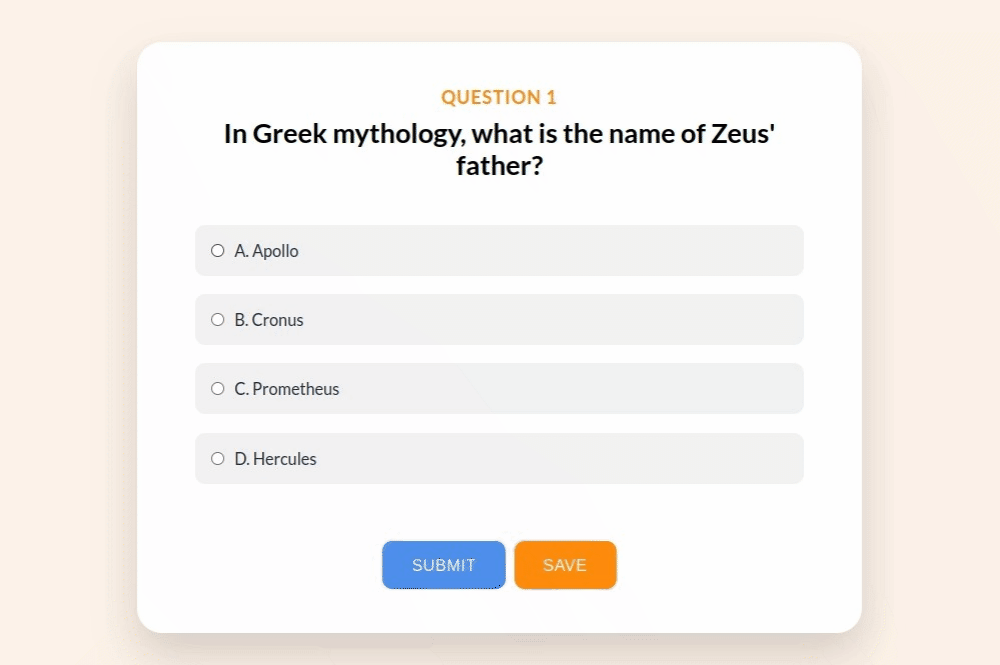
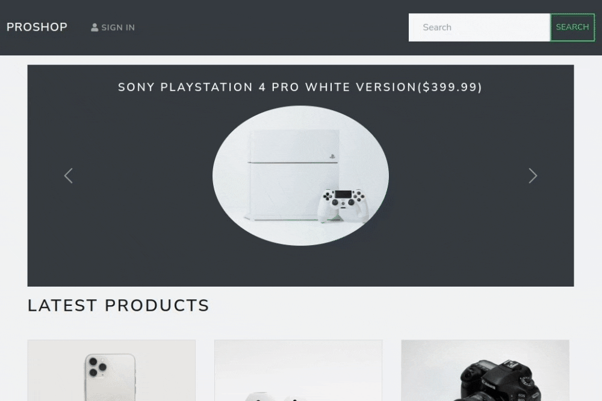

A minimal habit tracker built with React and Supabase. Users can add, edit, delete, and track daily habits with visual feedback powered by Recharts.

Quizzy is a web Application built using NodeJs and React. The database used for storing the questions and user scores is MongoDB.

Travel planner is a web application that provides users with current & forecast weather for up to 5 days for selected city. It also provides a small description for city.
Angular, TypeScript, NodeJS, OpenweatherMaps

A modern and responsive eCommerce store. Built with the MERN stack, it features cart, checkout, and admin tools. Browse products, log in, and shop seamlessly.

An imaginative and user-friendly online banking platform. Inspired from real world bank it offers transfer, request money and close account. (Username: bt , pin: 1111)

ToDoApp is a simple todolist application where user can create, update & delete the tasks. This web application is built using React, Node.js, Express & MongoDB.